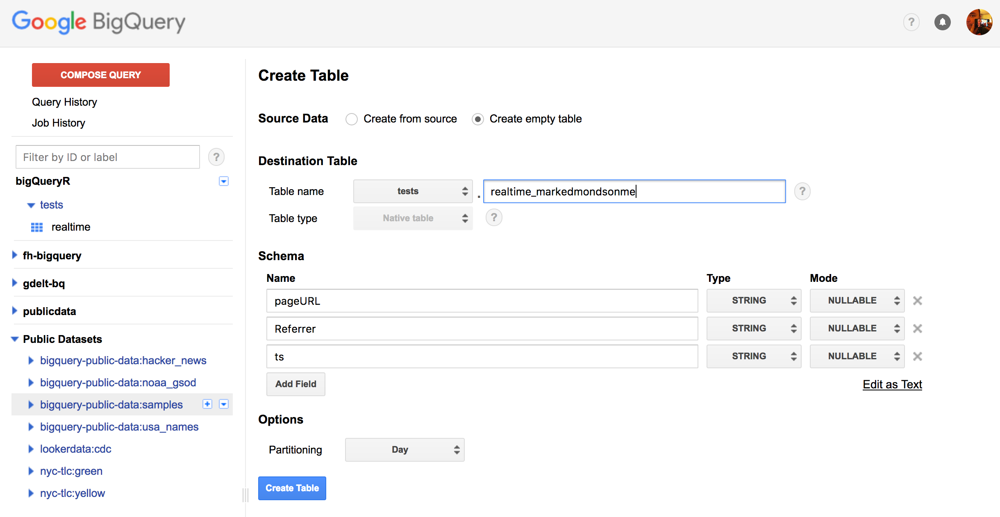
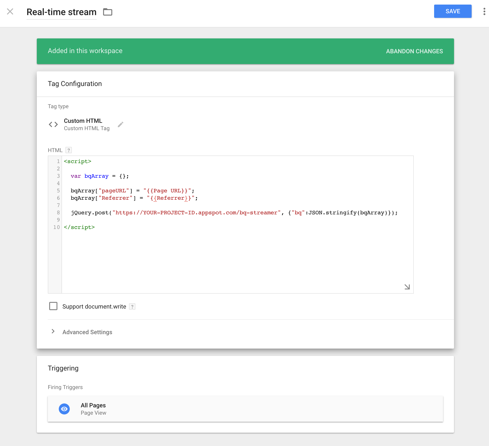
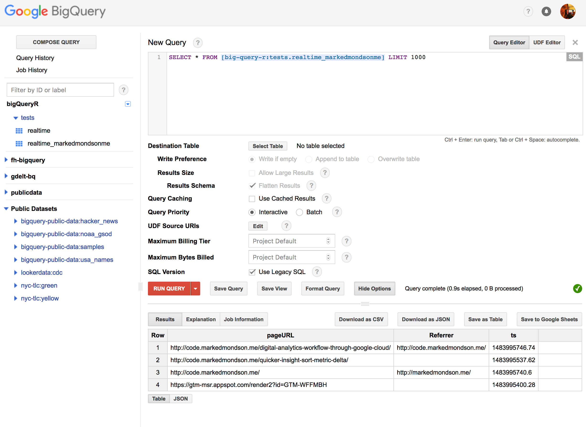

In part one of this two part series we walk through the steps to stream data from a Google Tag Manager (GTM) implementation into a Google App Engine (GAE) web app, which then adds data to a BigQuery table via BigQuery’s data streaming capability. In part two, we go into how to query that table in realtime from R, make a forecast using R, then visualise it in Shiny and the JavaScript visualisation library Highcharts.
Read part two here.
The project combines several languages where their advantages lie: Python for its interaction with Google APIs and its quick start creating your own API on App Engine, SQL to query the BigQuery data itself, R for its forecasting libraries and the reactive Shiny framework, and JavaScript for the visualisation and data capture at the Google Tag Manager end.
Thanks
This project wouldn’t have been possible without the help of the excellent work gone beforehand by Luke Cempre’s post on AnalyticsPros for streaming data from Google Tag Manager to BigQuery, and Joshua Kunst for his help with the Highcharts JavaScript.
Data flows
There are two data flows in this project. The first adds data to BigQuery:
- GTM collects data into its dataLayer from a web visit.
- A custom HTML tag in GTM collects the data you want to stream then calls an App Engine URL with its data payload.
- The app engine URL is sent to a queue to add the data to BigQuery.
- The data plus a timestamp is put into a BigQuery row.
Then to read the data:
- The Shiny app calls Big Query every X seconds.
- The data is aggregated
- A forecast is made with the updated data.
- The Highcharts visualisation reads the changing dataset, and updates the visualisation.
This blog will cover the first, putting data into BigQuery. The code for the finished app is available on Github here: https://github.com/MarkEdmondson1234/ga-bq-stream
BigQuery configuration
Starting with BigQuery, you need to create a project, dataset and a table where the data will stream to. The script we will use on App Engine assumes you have one field called “ts” which will hold a timestamp, other than that add the fields you will add in the Google Tag Manager script.
Select “partitioned” table when creating, which is useful if holding more than one days worth of data.
A demo is shown below, where the ts field is joined by the page URL and referrer for that page:

Google App Engine
Next we get to the meat with the Google App Engine app.
There is a guide on how to install and configure the app there too on its README.
In this example the app both reads and writes the data to BigQuery, but in production this should be separated out to avoid hitting quotas.
App Engine is useful in providing a way to run a script (in this case Python) whenever a URL is called, and also providing the infrastructure that lets you scale those hits from a free small amount to billions if you pay up.
In essence we upload a Python script and tell App Engine to run the script when certain URL endpoints are called, and then we shall call that URL from Google Tag Manager with the data we want to stream.
We now walk through the important functions of the app:
Adding data to BigQuery
You can read more about streaming data into BigQuery here.
The first function is modified from the python BigQuery examples and takes care of authentication, loading the JSON sent to the app into a Python list and sending to BigQuery:
def stream_data(dataset_name, table_name, json_data, time_stamp = time.time()):
bigquery_client = bigquery.Client()
dataset = bigquery_client.dataset(dataset_name)
table = dataset.table(table_name)
data = json_data
data['ts'] = time_stamp
# Reload the table to get the schema.
table.reload()
## get the names of schema
schema = table.schema
schema_names = [o.name for o in schema]
logging.debug('BQ Schema: {}'.format(schema_names))
# from schema names get list of tuples of the values
rows = [(data[x] for x in schema_names)]
# Send data to bigquery, returning any errors
errors = table.insert_data(rows, row_ids = str(uuid.uuid4()))
if not errors:
logging.debug('Loaded 1 row into {}:{}'.format(dataset_name, table_name))
else:
logging.error(errors)
The next class reads the data from a GET or POST request to the URL we specify later, and puts the job into a task queue, along with the timestamp.
class MainHandler(webapp2.RequestHandler):
## for debugging
def get(self):
## allows CORS
self.response.headers.add_header("Access-Control-Allow-Origin", "*")
## get example.com?bq=blah
b = self.request.get("bq")
## send to async task URL
task = taskqueue.add(url='/bq-task', params={'bq': b, 'ts': str(time.time())})
# use in prod
def post(self):
## allows CORS
self.response.headers.add_header("Access-Control-Allow-Origin", "*")
## get example.com?bq=blah
b = self.request.get("bq")
## send to task URL
task = taskqueue.add(url='/bq-task', params={'bq': b, 'ts': str(time.time())})
The task queue then reads the JSON data and calls the function to send data into BigQuery. App Engine task queues will rerun if any connection problems and act as a buffer, so you can configure them to suit the needs and volumes of your app.
class BqHandler(webapp2.RequestHandler):
def post(self):
## get example.com/bq-task?bq=blah
b = self.request.get("bq")
ts = self.request.get("ts")
b = json.loads(b)
logging.debug('json load: {}'.format(b))
if len(b) > 0:
datasetId = os.environ['DATASET_ID']
tableId = os.environ['TABLE_ID']
today = date.today().strftime("%Y%m%d")
tableId = "%s$%s"%(tableId, today)
stream_data(datasetId, tableId, b, ts)
Full App Engine Script
The full script uploaded is available in the Github repository here: main.py which also includes the read functions used in the next blogpost.
With this script you then need some configuration files for the app and upload it to your Google Project. A guide on how to deploy this is and more is available from the Github repository README, but once done the app will be available at https://YOUR-PROJECT-ID.appspot.com and you will call the /bq-streamer and /bq-get URLs to send and get data.
Google Tag Manager
With the app ready, we now move to sending it data via Google Tag Manager. This is relatively simple, since we just need to decide which data to add to the endpoint URL:
<script>
var bqArray = {};
// put the variables you want realtime here
bqArray["fieldname"] = "{{dataLayer}}";
bqArray["fieldname2"] = "{{dataLayer2}}";
jQuery.post("https://YOUR-PROJECT-ID.appspot.com/bq-streamer", {"bq":JSON.stringify(bqArray)});
</script>
The script assumes you have jQuery defined on your website, if you haven’t you will need to load it either on the page or hack it a bit by loading above the script via:
<script src="//ajax.googleapis.com/ajax/libs/jquery/1.10.2/jquery.min.js"></script>
For my blog example, here is a screenshot from GTM all configured:

The app engine supports GET or POST hits, GET is useful for testing in the browser yourself but its better to POST in production as it supports more data.
Add this as a custom HTML tag and deploy on a trigger that occurs after the data you want to collect is there. Thats pretty much it.
Once the tag is published, make sure you have deployed the App Engine app and you are using the exact same field names as the BigQuery table.
Checking its all working
You should then be able to start seeing hits in the App Engine logs and in BigQuery. By default the BQ queries in the UI cache the results, so don’t forget to turn those off, but then as new hits are made to the GTM container you should be able to refresh and see the results in BigQuery within a few seconds. Here is the example from my blog:

And thats it! You could now query this table from various solutions such as Tableau or Data Studio, but in part two of this post I’ll go in to how to query this table from an R Shiny application, updating a forecast and displaying using the Highcharts library.